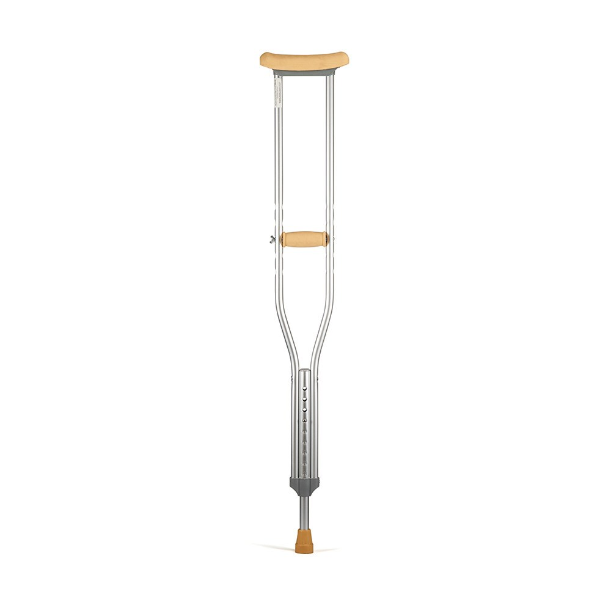
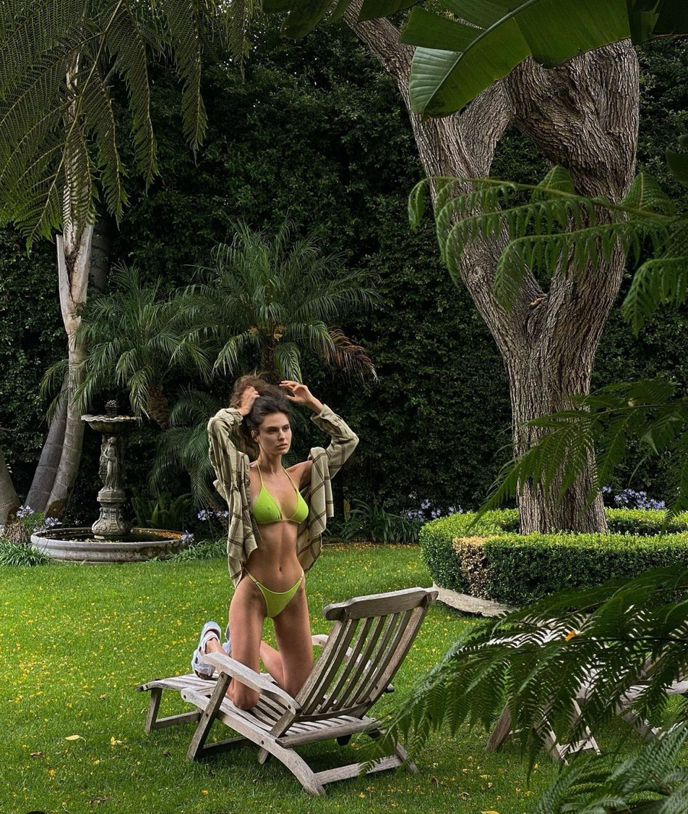
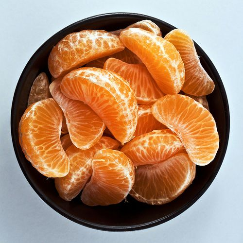
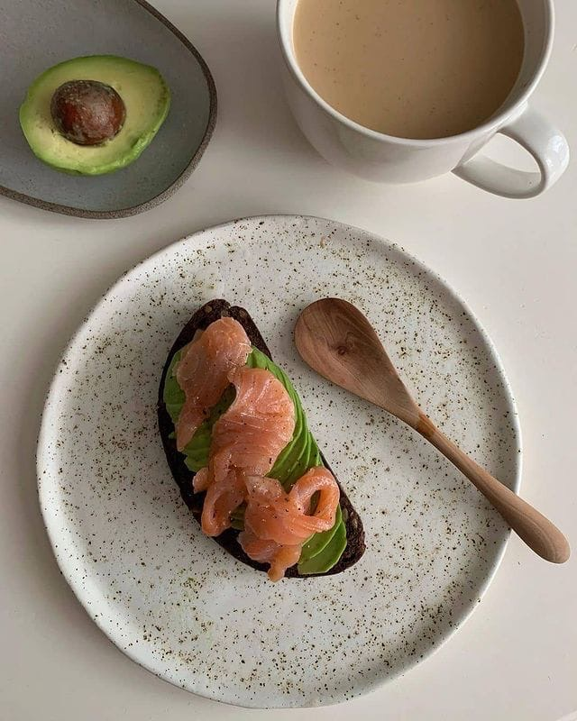

Полезные привычки на каждый день
Интегрируй полезные привычки в свою жизнь
Ваш помощник на пути к совершенству

Интегрируй полезные привычки в свою жизнь
Мой сайт! Пользуйтесь услугами агенства "Ноги не нужны"
Скоро весна, а это значит, что девушки начнут приводить свое тело в форму после зимней спячки. Я знаю, что многие из вас хотят похудеть без тренировок, и хотя я сторонник умеренных физических нагрузок, я решила раскрыть вам некоторые секреты похудения без спорта. В этом видео я расскажу какая физическая активность может заменить спорт, как обычная ходьба поможет стать вашему телу более подтянутым и стройным. А еще я устроила небольшой эксперимент: на целый день я откажусь от гаджетов которые помогают мне в быту, и посчитаю сколько калорий я потратила делая уборку, играя с кошкой, работая за компьютером. ...Читать далее...

Высоко-протеиновые, крайне питательные маффины послужат отличным подспорьем для тех, кто не любит терять время за плитой. Благодаря низкому содержанию жиров и большому количеству полезных ингредиентов эти маффины с легкостью можно приравнять к фитнес-перекусу. Из всех компонентов у вас получится около 12 небольших маффинов. Если не увлекаться, этого запаса хватит больше, чем на неделю!...Читать рецепт...
Зимой стоит тщательно относиться к выбору продуктов, иначе Вы рискуете сильно испортить свое здоровье. В зимнее время, организму особенно важно получать необходимые витамины и минералы для того чтобы поддерживать иммунитет и привычную активность. Здесь собран список продуктов, которые помогут Вам оставаться в форме и не терять продуктивность в холодную пору....Читать далее...

Сколько бы Вы ни сидели на жестких диетах, сколько бы ни морили себя голодом, сколько бы ни бегали к диетологу за тонной советов по поводу правильного, здорового, приводящего в идеальную форму питания - Вы никогда не добьетесь желаемого результата без регулярных тренировок...Читать далее...
Добавьте к этому рациону тренировки и добьетесь фигуры мечты!...Читать рецепт...
Сегодня нет человека, который бы не слышал о подсознании, которое таинственным и мистическим образом контролирует и управляет всеми жизненно важными функциями и психическими процессами человека. Я, почему-то, представляю себе подсознание в виде пчелиных сот, некоторые ячейки которого заполнены необходимыми для нашего счастья базовыми инструментами по умолчанию, от рождения, другие же - наполненными нашими умозаключениями, которые мы делаем в процессе получения того или иного жизненного опыта. В нашем подсознании хранятся все наши мысли, страхи, суждения, оценки и установки, ставшие негативными программами и блоками, мешающими исполнению наших желаний и успешной реализации планов и проектов....Читать далее...